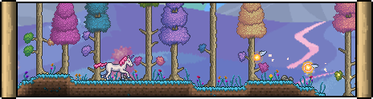
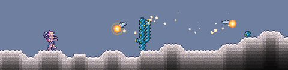

The Hallow is a Hardmode surface biome characterized by pastel-colored fairytale graphics, with cyan-colored grass, multicolored trees, and a large rainbow in the background, as well as similarly whimsical-looking (though quite dangerous) enemies. The Underground Hallow biome can be found directly beneath a naturally-generated Hallow biome.
The Hallow does not exist in newly generated worlds, with the exception of select special or secret world seeds. When the Wall of Flesh is defeated for the first time and the world converts to Hardmode, a diagonal stripe of the Hallow biome extending from the surface to the bottom of the world will be generated, converting all applicable tiles to their Hallowed variant. This initial conversion can replace preexisting sections of the world's "evil biome" (Corruption or Crimson). If areas of the Jungle or Glowing Mushroom biome are included in the conversion area, Stone will be converted, but grass on Mud Blocks will be unaffected
Once generated, the Hallow spreads in a manner similar to the evil biomes; Pearlstone, Pearlsand, and dirt blocks growing Hallowed grass will spread Hallow to neighboring blocks, causing Hallow enemies to spawn over ever-larger areas. Hallow can also be seeded in new areas via Hallowed Seeds, Holy Water, or Blue Solution. See below or the Biome spread page for more details.
The Hallow, unlike Crimson and Corruption, cannot spread through mud areas such as those found in Jungles or Glowing Mushroom biomes, and Sunflowers can stop its surface spreading like they would stop the spread of evil biomes in pre-hardmode.
The Hallow, unlike Crimson and Corruption, cannot spread through mud areas such as those found in Jungles or Glowing Mushroom biomes, and Sunflowers can stop its surface spreading like they would stop the spread of evil biomes in pre-hardmode.

When the Hallow spreads into the Desert, it becomes a Hallowed Desert. It is very similar to the Hallow: the music theme is the same, the enemies are the same (except for the Light Mummy and Crystal Thresher), and the background becomes slightly different.
The sand is also replaced by pearlsand. Although their color is different, Cacti still drop Cactus when cut, and Waterleaf plants are also able to grow.